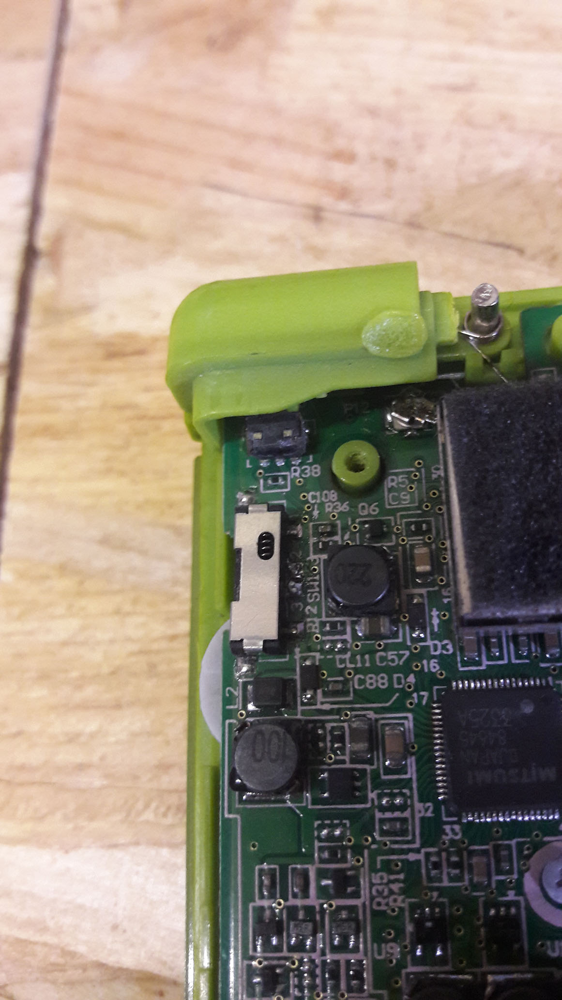
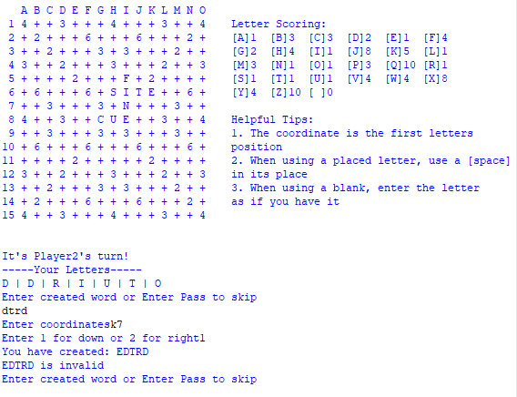
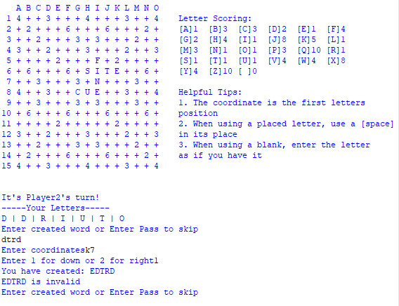

I spent the last two months building three Wordpress websites.
HiveIndustries
and i2llc are both ecommerce stores,
covering their respective regions, and allowing customers to seamlessly create Purchase Orders.
With InterspaceInd
being the location of more detailed product information and guides.
All of which I now manage and maintain.
.vault
A list of most of the things I've worked on (some with images).
The projects marked in bold are some of my favourites
I built a module for the Companion,
a software platform designed to manage and control various software/hardware
applications within the realm of live production, broadcasting, and other audio-visual
setups. Through input devices such as the Stream Deck, users can perform complex
actions with a simple button press without the need to be nearby.
I spent the next couple months figuring out how to build modules. It didn't help that
Companion was shifting to version 3, with the module system was having quite the overhaul.
Meaning there was now lots of outdated features and documentation, being
revised as I was trying to learn.
I was also quite unfamiliar with Javascript and asynchronous programming, but after
plenty of iterations and commits, I built the MasterCueV7 module, which
after pairing with, allows you to send and receive Cues, and set, suspend, or resume
outputs, all through HTTP requests and JSON parsing.
My MasterCueV7 module can be found by searching in the Companion Connections list
of the Companion web interface, or on its Github page
Looking into the process behind other-the-air updates, as well as working with Ethernet, I read into the network stack, a callback to my Computer Science studies. Where I reminded myself of the general function of each layer, before I began working and learning about a Windows API called winsock, as an entry into the world of networking.
MyselfAround this time I began learning some fundamentals on how bootloaders work, I learnt about the importance of memory mapping and the offsets required to point to specific sectors within (in this case) the STM32. I was able to write a bootloader application which looked for an update request on startup. On update, the sector containing the current firmware would become the "previous" version, and the update data from the UART would be written to the "current" version sector, after verifying the update checksum the current version is booted into after the bootloader, otherwise the previous sector remains the current sector.
C/C++ STM32 MyselfI wanted to release a slight overhaul to my Google Play Terminal Access title, I had spent some time adding some security to the leaderboard system to make scoring more fair (I thought it was pretty clever atleast). Also was informed of the brackets rule for the "bonuses". As it turns out they aren't distributed randomly, they are within any 2-3 character group of brackets, e.g "<1$2>" or "[$4*]". After implementation it made sense, and worked well. There were some improvements to the GUI aswell! Although the endless issues with building my application for Android with the various compatibility issues with the service libraries (required to work with Google Play), then all the fun new policies to work through, which was fine. But my work won't see the light of day, as some permission that is now required with Android 13 (and is present within my package), isn't picked up by the Play Console so I can't rollout the update.
C# Unity Myself
I had the incredible opportunity to visit and experience the huge embedded exhibition that is embeddedworld! Not only did I get the chance to speak with the exhibitors and their products, I also got to explore a small piece of Germany! As well as trying the delicious Currywurst!
Myself


Unfortunately another TV/monitor of mine had given up on me. Upon inspection, I
discovered that the TV worked, although the backlight LEDs weren't turning on. I
opened up the device to find the single LED that was preventing the others from
turning on, sadly these couldn't be replaced but I did find a replaced LED strip.
Tragically the day before the replacement arrived, I had placed the (very fragile) LED display
on my workbench, which the adhesive on its back had stuck to.. so naturally upon lifting, it
developed a fantastic crack and rendered the TV useless...
Meanwhile I had been attempting to repair an old TV of mine which was stuck in a boot loop,
sadly I learning the common fault is a corrupted flash. Luckily for me, there wasn't
a simple firmware update or reset I could, but I did manage to locate the 25Q64C flash chip,
as well as the TVs firmware in the form of a binary file!!
I tried what felt like hundred of methods to program this IC, from quite a messy surgical
operation, attempting to flash using Tera Term with the help of some logic level
shifters as the chip can only handle 3.3V. To finally picking up a SOP-8 clip to make my
life a little easier, then booted up a Linux distribution and attempted to use flashrom,
which was able to verify the chip!!
At this point I reached some hurdle with Ubuntu (I think it was the number of chip pinouts),
so I tried the same thing on a Raspberry Pi, and I actually managed to program this
flash with using some binary file I found in an EEPROM forum dump!!!
Unsurprisingly, after all the the work I put into this project, I once again tripped at the last hurdle,
while resoldering the IC onto the board, I had lifted the solder pads... I couldn't believe my luck.
Despite being unable to repair these devices, I really gave it a good shot and did learn a whole lot.
I'm just a little disappointed that I'll never know if maybe, just maybe, it could've worked.
I developed a Windows application featuring a simple GUI to transmit specified
configurations of segment display data to drive Interspace Industries's (Big) Countdown
displays over USB. Giving the user control of the three colours and 4x8 segments, plus the colon.
Originally I planned to build an embedded version that would shift the serial data,
but because of the modified version of the RS232 protocol used, I instead built a
dedicated WinForms application, which now streamlines the product evaluation stage
for the Quality Assurance team.
Each time I review this website, I always find something that could do with revising.
From some quite awful scaling on smaller resolutions to the unnecessarily large
media files or my poor grammar. So, with my current knowledge of things. I've made
minor changes to the site, most notably to the scaling for smaller displays.
Above, you can see how the site previously scaled, with elements becoming
unreadable and misplaced. Below are my changes, with elements not becoming too
small. Also, hiding media files on smaller displays.
As the title suggests, I had the chance to tour around a part of the CERN facility. With the opportunity to ask some questions! Getting an insight into their data storage solutions for the huge amount of data they process. But I did want to ask if they had any interest in using neural networks (after the current worldwide interest) to process and filter this crazy data set to find patterns. But forgot... maybe next time!
MyselfI had some time to work with a 0.96" (160x80px) TFT LCD display, this time building on my understanding of the formatting of the serial data used to draw to the display. Also seeing the speed difference between hardware and software-based SPI. As well as spent some time counting pixels (so I could correctly space characters).
C/C++ Electronics MyselfDuring my short stay in Geneva, I had the opportunity to attend a french language course for six weeks! I really enjoyed my experience, as well as having a great chance to practice my reading, writing and speaking skills and meet some amazing people!
MyselfI offered to take a look at a printer that wasn't functioning. Spending a few hours
over a couple of weeks trying what I could to get it working, with varying
degrees of success...
After dismantling the entire unit, disconnecting the faulty output tray sensor, and
playing a bit of Simon Says with the buttons to reset and modify its settings.
I managed to get it working for a very short period of time. Although, I did eventually
have to give up on it.
I learnt as much as I could about the ESP32 from Espressif,
I began my humble beginnings by grabbing and displaying the device's
MAC address!
Before learning how to achieve two-way communication via ESP-NOW, sending a
data payload over WiFi to a hardcoded peer's address that is received and verified through
callbacks.
Then, a one-to-many network with a single transmitter which sends its
data (on button input) to the registered remote peers, which relay the received data
to a serial output.
With concerns of power usage, I researched into the "deep sleep mode",
which powers down a large portion of the module's functionality but requires the
usage of the RTC IOs or timers to wake the device from this state.
After lots of testing, improving my understanding of I2C and unpacking data packets
with the help of "promiscuous mode", I figured out how to fetch accurate RSSI values!
This study will help me in future projects.
With no prior knowledge about these types of sensors, I began learning how to fetch
raw axis data from its registers over I2C. After fine-tuning the configuration
and resolution register bits for each output (of which it has three accelerometer
outputs and three gyroscope outputs), I built myself a C++ library to package this
communication system.
Finally getting relatively meaningful readings from the six-axis motion sensor, I
was able read the data serially using an Arduino Micro (HID compatible).
Translating the data into mouse positions to control the mouse of a connected computer.
During this time I also discovered DipTrace,
which I've been using to improve my understanding of circuit design and prototyping.
Previously I worked on some embedded firmware with a relatively simple but essential function; to detect and manage a power line and perform short tests to prevent components from being damaged during a fault. An updated revision was needed, with the added ability to monitor multiple power lines (nearly) simultaneously.
C/C++ Electronics Interspace IndustriesAbout two years ago, I developed a Windows desktop application (NoteTaking), which I
wanted to use on my phone in times when I didn't have access to my desktop.
With my knowledge of Unity and the relative ease of creating cross-platform applications
(skipping the work for Store presence), I decided to build a console interface,
which (with the route I took) was more challenging than I thought. For the terminal to
scroll and size correctly, display each row naturally, with text wrapping and
responses to text input.
After the usual trial and error, I created the GUI, ready to copy most of the
functionality from the desktop version. Except for the user input and file-saving
methods, which needed rewriting to work on Android.
Wanting to understand some of the entry-level machine learning concepts,
I recreated a project I had seen created with Unity.
My goal was to create a learning algorithm that would result in AI agents
reaching a location with no exact knowledge of the destination (only their
final distance from it) and improving with time.
The process involved placing the agents on the scene with a maximum number of
steps they can take in any direction before they "die". After each agent has
taken all of its steps, it is given a fitness value calculated based on its
distance from the target location or, if reached, based on the number of steps
taken.
I then take the best-performing agents by fitness value (coloured blue) and
place them in the next generation with slight mutations to their movement
pattern, which may be for the better or worse.
Looking at my example above, you can see that there is a point where you reach
diminishing returns, with tens of generations going by and only improving by
a step or two. It came down to fine adjustments to the fitness algorithm, where
I achieved a minimum of 65 steps to reach the target over 175 generations, with
the real minimum being about 60.
As a surface level look into this field. I enjoyed working on it.
I spent some time researching and working with the XBee modules
from Digi.
Beginning by teaching myself the basics of the XCTU application used
to interface and configure the RF modules.
For each unit, there was a bit of setup beyond assigning them the correct network
ID. Such as ensuring that each device had been given a suitable role within the
network (as a Coordinator, Router, or End Point), was in the correct operating
mode, and other minor adjustments.
After manually setting up each module, it was possible to demonstrate their
interconnectivity with the communication of data frames, which I could then
verify serially with C. I also learnt that it was possible to configure
modules remotely if the unit was in the correct mode.
Strangely enough, around the same time that I was working on my small shape game,
I was requested to produce a reaction game for
Williams
Racing, which can be seen above (but missing sound)
I worked with Interspace Industries
and Fury Design Agency to use a real Formula One
steering wheel. Which had been modified by Interspace Industries and programmed by me
to send keyboard presses serially to a computer that was running the reaction game that
I created with Unity
With a simple idea in mind, I wanted to produce a small mobile game
where the aim is to match the falling polygon that you control to the holes it's heading
towards, endlessly, and more quickly.
It can be found for free on the Google Play Store
My dad's original Grandstand Munchman hasn't powered up for the last few
decades. Over the years, I've made small attempts to find the cause with no luck.
But every year, I have picked up new fragments of knowledge in troubleshooting
electronics and was finally able to identify an NPN transistor that wasn't meeting
the datasheet's specification and needed replacement.
Finally bringing Munchman to life, once again
I developed another performance-efficient realtime power analyzer with the AVR tiny series.
Built to indicate an OK status so long as the sampled voltage level is within an acceptable range.
Otherwise, power cycling - However, if this occurs too frequently, we enter a lockdown
state, whereby the power to the device is disconnected, and a manual reset is required.
With my knowledge of AVR registers, I was able to gather and monitor the 10-bit resolution analogue
input by combining the values of two separate registers.

Wanting to build another Unity game for Android, I looked no further than the Fallout
minigame that I had already made so many prototypes of in the past.
To begin with, I started working on generating the hexadecimal row headers and "play
area". Followed, by implementing the highlighting and grouping methods. As each
symbol character needed to be accessed by a uniquely addressable "cell".
After finalizing my method of grouping cells, I could highlight individual row
headers on mouseover/touch for both desktop and mobile platforms. I had some fun
with placing the generated "passwords" evenly within the play area - where the
random amount of words had to fit within the region, without touching, and of
varying lengths depending on difficulty. Also attempting to limit the number of
wrapped words.
I thoroughly enjoyed designing and programming the logic for this, but the process of
implementing Google Play Service support, GP Leaderboards, and Unity
In-App-Purchases, really slowed things down. But, I'm happy to say that it's finally
released and can be found on the Google Play Store for free!

Wanting to improve my programming and problem-solving, I began working through a
couple days of the Advent of Code.
Each day, you are given two interesting problems to solve (shown by the stars on the
right) of varying difficulty.
With puzzles ranging from MD5 hashing problems to "quantum entanglement". I've only
completed 12 tasks (in both C and C#), but I'll probably return for more when I feel
like an extra challenge
With the extra time I've had I took part in a couple of @Pixel_Dailies. An interesting Twitter account dedicated to posting a topic or subject for people to create Pixelart of or about, such as #snowboarding or #floral
Artwork Myself

Looking for some extra work, I ended up posting some freelancing offers on Fiverr. Offering to build people Discord bots, fix their poorly tagged audio files, or assist in writing C#. Sadly, not much luck
C# Unity MyselfAiming to improve my French I built this Android application. Allowing me to store
translations and test myself against statements I add to the app over time.
Although I've just illustrated this functionality with some math statements.
After building it though, I realized what I had built was a flashcard app..


As a small side project, I wanted to create an interactive visual to illustrate
different functions layered over Perlin noise.
Starting with a small 2D Perlin noise sample, I append my functions, including an
"upscaler" and a "limiter", finally applying colour to the sample using a Custom
gradient editor script, which I can't take credit for.
I really liked some of the "maps" created with this generator and decided to build a
small treasure map game, where you have to use a tiny section of the map to find the
correct location on the full map

I developed a program that sends commands via SPI to a TLC59281
(an LED Driver) to control four seven-segment displays. This involved building
32-bit payloads that specify which segments to illuminate, the colour of the LEDs,
and the symbol bits. As well as the serial transfer method with the correct timing
to send data to the driver chip
Continuing this, I realized it would instead be useful to refactor my code and build
a C++ library. Allowing others to interface with this display without needing to
understand the payload structure. I also extended the functionality of the library by
adding various helper methods, allowing a user to perform extra functions with the display.


After years of use, my father's Bosch drill started showing signs of failure, only
functioning when held in a certain way.
Opening it up revealed a cracked solder joint, which I thought was likely due to
after years of withstanding high currents. Re-soldering the connection resolved the
issue for a few months before it failed again. Sadly unable to find the underlying fault.
Around the same time I replaced the batteries within my parents phones which were
no longer holding charge.

Looking for other methods of creating mobile applications without the usage of Java,
I looked into Xamarin. Learning that it had a similar flow to Android Studio but
allowed for the usage of C# on top.
With this, I produced a small Stack Overflow post viewer for mobile, grabbing
the latest posts from the RSS feed given a tag and learning a little more about
asynchronous calls
Wanting a refresher in certain aspects of C and C#, I completed two short online courses. The most significant being a greater understanding of pointers and memory management within C.
C C# Myself

After working with Android Studio, I wanted to return to something I understood
well and wanted to build a cleaner looking application than my previous attempts.
With a simple counting game in mind, I started creating assets and the basic game loop.
After quite a few more steps, creating graphics, the ever-growing codebase, and
gaining a better understanding of scaling UI for multiple resolutions (shown above)
I produced Cube Count a quick and minimalist counting game, available on the Google
Play Store! That can be found on the Google Play Store
Wanting to bring some older ideas to life, I began learning about the Android
Studio workflow, making a few prototype apps, but nothing too noteworthy.
Other than a small working start to the Binary Utility for Android, a Higher/Lower game,
and some async testing.
Continuing my enjoyment in creating visual pseudorandom generators. I put together a small connections generator using Extended ASCII, which I thought produced nice looking geometry, generating for any width or height. It worked by matching against the surrounding symbols, selecting a "connecting" character from a dictionary, ensuring every character is correctly linked vertically
C# Myself
To allow my Notifier Utility to display text clearly, I produced a small word-wrapping utility. After entering a large amount of text, it will simply create a newline before a given width is reached, without cutting words
C# Myself

At first, I wanted to produce a graphic events system that notifies you with
given data at a given interval.
Entering a small summary for each "notification", defining its time / datetime /
interval through a pop-up menu. But after realizing how many new things I needed
to understand, I stopped with it. Instead, building a smaller console application
version, making use of BackgroundWorkers to manage the intervals of each defined
entry. To retain this data after closing the application, I serialize it into a
JSON file. Deserializing it on loading of the application.
When it becomes time to notify an event, the given summary is simply displayed


I wanted to produce a utility that combined all of the bitwise functions that I usually have to find online. Including bitwise maths, converting between decimal, hexadecimal, and binary automatically (could be better), and drawing an 8x8 bitmap from entered byte data. Or by drawing on the canvas directly with the mouse (left-click to draw, right-click to erase)
Winforms C# Myself
I designed and coded a driver chip for the SSD1306 128x32 OLED display, working over SPI. Taking in my defined commands over serial, then converting them to a set of byte commands that the display chip can interpret, and draw to the screen.
C/C++ Arduino Interspace Industries
Disliking the look of my previous WordPress website, I wanted to build something
better and more my style.
After spending quite some time revising my web development skills. I had almost
finished building this new website from complete scratch (and it wasn't half
bad!). Just requiring more styling and population, although I'm sure a lot of
cleaning up could be done
Looking through my older projects, I tried running my old discord bots once again. But as expected, the original Python discord library that my bot was built with was now outdated. As well as the problems with the JSON save files. Although I did temporarily fix some methods though just to see it work once again.
Python Json Myself

A small power switch repair for my cousin's Nintendo DS Lite, as the power switch mechanism had been damaged and was no-longer making contact with the switch. So I replaced it with a secondhand part.
Electronics Myself
Designed and produced the code for a microcontroller to indicate the charge status of a battery through Charlieplexed LEDs. Also, instead of recreating the Charlieplexed circuit once again on a breadboard for testing, I finally drew out and built a permanent perfboard version of my own.
C/C++ Arduino Electronics Interspace Industries

While trying to be somewhat helpful on StackOverflow, I didn't want to sit on
the webpage refreshing every so often, looking for questions I might be
able to answer.
So I developed a small Winforms application that displayed the latest questions
under a given tag as links to the web post. Updating every five minutes,
grabbing entries from the RSS feed.
I may build upon this with extra info such as views, votes, as well as
other features like page navigation.
With the epidemic on everyone's mind, I built a program for an AVR microcontroller to pull in sensor data to determine the number of people within a building. Then sending that data through a UART interface to be written to a display. Letting customers know how many people are allowed to enter. Unfortunately this projects development came to an end.
C/C++ AVR Arduino Interspace IndustriesTo learn how to send serial data over USB, I developed a C# application, which may be useful for future projects
C# MyselfWanting to download some older games, but being limited to my internet connection,
I looked to sort through my uninstalled games by file size.
Sadly though, the Steam library doesn't support the filtering of uninstalled
games. So I pulled the XML data of my library from the Steam Web API,
deserialized it, and applied it to a CSV file using C#. Then preferring to see the
cover art rather than just the game titles as text, I also learnt how to create macros
within Excel to insert images in place of image URLs.

With the terrible internet connection I had, I decided to entertain myself by
recreating the terminal hacking minigame from Fallout 4 for my phone. I ended
up building a version that took most of the visuals, but scored slightly
differently from the original game (which was a bad idea), scoring two
points for the guessed word containing a correct letter in the correct
position, and one point for a shared letter, but not in the right spot.
In short, it was more confusing and less intuitive than the original, but I
enjoyed the process of making it
After showing it off I learnt how similar it is to the board game Mastermind, of
which I made a Visual Studio console version to try it out.
While playing a little bit of some old school Modded Minecraft, you encounter a mod named Thaumcraft, where a main mechanic is linking "Aspects" which can only connect to a specific set of other Aspects, to progress through the mod. So naturally, I built a small application that finds and lists all the possible connections for you, from a given starting to an ending Aspect. By traversing through a dictionary of defined Aspects and their allowed connections
C# Visual Studio Myself

I produced a working prototype of a desktop VU Meter with Winforms using NAudio.
Monitoring multiple devices (current limit of 5) simultaneously, scaling the
program window with each device added, with options to add / remove monitors,
and refresh the list of audio devices.
The source code can be found on my Github

I thought it might be a nice idea to create a diary console application, taking in given notes (some text, datetime, and a bit of data), storing them within a JSON file, to then be deserialized, formatted and displayed on-screen at a later date. With the option to display notes by a specific month / year / all, and executing the program at a set time every day through the Task Scheduler.
C# Visual Studio MyselfWhile playing around with generating shapes based on surrounding cells, similar to Conway's Game of Life. I ended up building what I thought was an interesting pattern generator. Then decided to move it over to Javascript to embed within this site for a little while.
Python Js Myself
I programmed an ATtiny which interrupts another chip, requesting for it's signal strength over SPI. Then drawing the returned value to a TFT display
C/C++ Arduino Interspace IndustriesI programmed an IC that implemented a recovery system. That will continuously monitor the state of a PWR line affected by an external sleep function. If certain conditions aren't met, an LED will indicate this event, and the device is restarted. Otherwise, to indicate the device is functioning correctly, the LED will pulse, creating a heartbeat effect
C/C++ Arduino Electronics Interspace IndustriesSuggested as an extra feature it would be interesting to interface with a device from a local StreamDeck. So I began looking into the Companion app, as well as the possibility of adding modules. Although after some research it sadly seemed out of reach, for now..
Javascript Interspace IndustriesNeeding to display information gathered from the data inputs of a microcontroller
that I was also managing, I improved my understanding of SPI interfacing to
communicate with the display.
Later I'd found myself troubleshooting the incorrectly displayed colours.
Where I also learnt that this particular TFT display relies on the RGB565
byte format rather than regular RGB888
Interspace Industries had an upcoming exhibition, where I designed and produced the pages that would be the base for the MC7 graphical user interface. After many iterations, a preferred style and layout for an early version of the MC7 display was chosen, ready for its first showing
Artwork Nextion Interspace IndustriesConsidering building a website for my father, I began re-learning about web scraping with the BeautifulSoup library. Allowing me to grab entries from his current site, to populate a spreadsheet file with data and images of his work
Python MyselfI can't exactly remember why. But I ended up learning some of the fundamentals of interpreting the rotation of an encoder. Such as the direction of rotation or the magnitude of rotation
C/C++ Arduino Electronics MyselfWanting to measure short distances or detect motion, I decided to have a look into the HC-SR04 module and learn a little about Ultrasound
C/C++ Arduino Myself
I taught myself how to build a bot for the messaging/VoIP application Discord
and switching between discord.py and discord.js.
That would allow me to add some extra features to the server that my friends
and I share.
It only responds to defined commands, indicated by a forward-slash command
prefix, followed by a command such as "diceroll", which will return a
number between one and six. Adding a level of progression to the bot, I
implemented a load/save system, storing data more permanently within JSON files.
Doing this allowed me to create and keep track of a virtual currency I created,
which led to the addition of a roulette game, coin flip, and currency leaderboard.
As well as a case-opening clone from the game CS:GO, which allows a player to
"open a case" using my virtual currency, storing the unboxed item of varying
quality (indicated by colouring with text syntax) within their "inventory"
(another JSON file). Which could then be sold or kept.
For this bot to work however, it relied on my computer running. So naturally,
I learnt how to program a Raspberry PI and then moved the bot program onto
it, which I could then leave on nearly 24/7.
Without too much of a plan in mind I wanted to build a colony game where you
manage little colonists on your phone.
You're able to select a member from your faction (blue), then click a position
for them to move towards or select a resource for them to gather. If two members
from opposing factions come within the vision range, the two colonists will
"battle" (currently bumping each other to the death). I'd like to revisit and
expand on this idea one day..
My first introduction to transmitting data over radio involved learning how to send strings of data from one nRF24L01 module to another, with the received message being drawn to my 16x2 char display from before
C/C++ Arduino MyselfTo apply my knowledge of the tiny series AVR chip, I used a potentiometer as
the input device and mapped the read 10-bit analogue voltage level across
multiple LEDs, including small dead zones between each LED range.
As the potentiometer is turned, the brightness of the first LED increases
until reaching full brightness, and then the next LED in sequence will begin
to light up (after passing the dead zone) until max, and so on

It's common that the track name is correctly listed within the filename of a song
but not within the file's metadata. I built a Python script to fix this.
It works by cycling through audio files within a local directory collecting
artist names, comparing them against an ever-growing text file of artists.
Correctly formatting them (as often they have slight differences which
break media player albums), this is then applied to the ID3 tags along with the
song name for clear track formatting when using media players
Similarly to my music file metadata issues, when downloading ebooks the names are
rarely formatted correctly. So I built another small utility to speed up the
process of formatting title names for select mobile ebook readers
Once again, I needed to sample and monitor line-in, and if certain
conditions weren't met, a safe power cycle was carried out,
preventing damage to the device, and indicated by LEDs.
Around a similar time, I developed another solution to power cycle some number
of times, depending on a pin state. If the device doesn't "stabilize" after the
current inrush, no further checks are made, and the device is disconnected

With my understanding of the ATtinys registers, I developed a solution that combined a ground referenced signal presented within its ADC registers to generate a 10-bit resolution result. Which represents an analogue dB value, then displayed via the VU Meter of the CiO² product from Interspace Industries through Charlieplexed LEDs.
C/C++ Arduino Interspace Industries
For the next week or two, I taught myself about the Nextion
display. Learning how to add text, images, and interactive elements by
understanding the Nextion Editor software. As well as communicating with the
display over a two-pin serial.
Using what I had learned, I drew up a keypad allowing the user to input a
calculation through the display, which sent serial data to an Uno to process
the input, returning the correct result to the display.
I also produced a microwave-style numeric input system, shifting digits ahead and removing the digit overflow.
Lastly creating a combination of features, building upon an older product from
Interspace Industries.
Incorporating the digit shift module, a timer input, as well as numerous page
designs for the Nextion
Built a solution that analyses line-in, indicating when certain conditions are met and power cycling the device. If these conditions occur frequently within some time frame, disconnect the device, and await a manual reset.
C/C++ AVR Interspace IndustriesLearning about the requests library to build a Python program that pulls the title names from a youtube music playlist, matching against filenames within a local directory. Building up an M3U playlist file in the same order as the youtube playlist
Python MyselfWanting to perform operations more frequently as well as save on program memory. I began
learning about "Port manipulation", as well as more bit-math and registers
involved in controlling the functions of this series of chips
Around the same time, I also taught myself about EEPROM (non-volatile
memory), for retaining small amounts of data after power down

Wanting to find a use for my 16x2 character display, I thought it'd be fun to build a single-digit calculator using too many push buttons. It worked by allowing you to cycle through values 0-9 (with the unlabeled pushbutton) for the first digit. After confirming the first digit, do the same for the second, then select the operator (+,-,/,x), completing the calculation and appending the result to the end
C/C++ Arduino MyselfApplying my knowledge of range mapping, I built a program fading through a sequence of LEDs while holding down a single pushbutton, changing direction on re-press, and toggling state on a single press, retaining the previous state
C/C++ Arduino MyselfNeeding to control more LEDs with less pins, I learnt the logic behind Charlieplexing,
which allowed me to illustrate numbers 0 through 9 with a seven-segment display,
controlled by an Arduino Uno.
I also wanted to see the result of fewer LEDs per segment...
To begin my journey into the world of reading datasheets, I downloaded and started
looking through the 8-bit AVR documentation. Quickly learning how the tiny series
handles analogue/digital IO after a small refresher of binary maths.
To fade an LED from an analogue input involved addressing and accessing the IC's data
registers, combining the bit data of two to get an input of 10-bit resolution.
 

An ASCII recreation of the board game Scrabble developed for my A-Level Computer Science coursework. Including Premium scoring cells, Horizontal and vertical placement, Blank tiles, A dictionary validation check around the letter(s) placement, Multi-word scoring, and more. Also thanking my incredible teacher, Mr May for fuelling my interest in computing
Python Myself


As well as studying Computer Science, and Physics, I also studied Digital Illustration during my A-Levels. Which involved lots of short studies into the styles of a range of different artists which we could interpret, and expand upon in our ways, some of which you can see above. Many thanks to my wonderful teacher Mr Eyre
Artwork Myself


For my second mobile game, I wanted to add some more features. This included the
addition of multiple "abilities", where a random ability is activated when you
collide with a mystery box. As well as some basic character customization and
upgrades, allowing a player to increase the length of time that each ability
lasts, and change their colour.
As I haven't kept the game up-to-date, it has been removed due to its outdated
usage of Ads. I also provided an APK version of it for a period of time, but
I also feel it is too outdated now


For my first released game for Android, I designed and programmed Sweep Driveby.
The aim is to swipe the junk off the road, that the vehicles continue to dump off.
This earns you points, with bonus points for swiping junk into the hoops! The
smaller the hoop the more bonus points you will receive. The game is lost if a car
collides with a piece of junk.
As I haven't kept the game up-to-date with the latest Android Play Store policies,
it has been removed due to its outdated usage of Ads (and everything else). For a
short period of time, I provided an APK version of it, but I feel it is too outdated
now (although some site probably still has an APK of it, but I wouldn't trust it).

I built an autocomplete package for the Atom editor,
that integrates the majority of elements from the
Unity Scripting API
as autocomplete suggestions. Including reference links to the relevant Unity
Scripting Reference page, through the [More] redirect.
As I haven't kept this project up-to-date, it will not include the latest
reference entries, as the entries were pulled using a web scraper that I
built in Python, at the time of creation